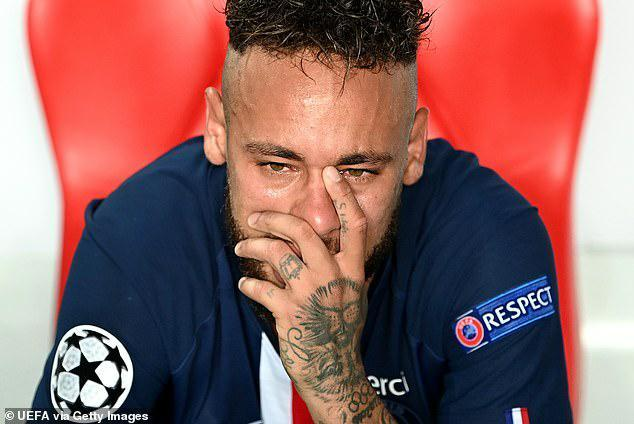
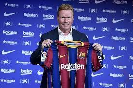

.png)
|
PSG 0-1 Bayern. The Bavarians Menjadi Juara Eropa 2019/2020 
Final Liga Champions musim 2019/2020 menyajikan duel raksasa Prancis vs raksasa Jerman, PSG vs Bayern Munich. Pertandingan berlangsung di Estadio da Luz, Lisbon, Portugal, Senin (24/8/2020) dini hari WIB.Kedua tim punya cara berbeda untuk saling teror. PSG mengandalkan kecepatan trisulanya yakni Neymar, Kylian Mbappe, dan Angel Di Maria. Bayern Munich punya cara berbeda. Die Roten bermain dengan tenang, menguasai penguasaan bola. Tangis Neymar Usai kekalahan PSG 0-1 Bayern Terdapat beberapa momen yang membahagiakan maupun kesedihan yang terpampang dari berakhirnya pertandingan final Liga Champions antara PSG dan Bayern Munchen. Satu di antara pemain yang menangis tersedu-sedu ialah bintang Paris Saint-Germain (PSG), Neymar. Berlangsung di Stadion Da Luz, Portugal, PSG haru menelan pil pahit usai kalah tipis 1-0 atas Bayern Munchen di final Liga Champions, Senin (24/8/2020). "Memenangkan Liga Champions itu spesial, saya tahu ini. Tapi memenanginya bersama PSG akan membuat sejarah, dan itulah tujuan saya datang ke sini," tukas Neymar seperti yang dikutip dari laman resmi Ligue 1, ucapanya beberapa waktu lalu. Instagram official Champions League juga mengunggah sebuah post yang bercaption "so close" yang bertujuan untuk kekalahan Neymar Lihat postingan |
OFFICIAL: Ronald Koeman sebagai Pelatih Barcelona setelah pemecatan Setien Ronald Koeman menggambarkan Barcelona sebagai klub impiannya setelah ditunjuk menjadi pelatih kepala atau manajer tim dengan kontrak dua tahun. Ia resmi ditunjuk Barcelona sebagai pelatih pada hari ini, Rabu 19 Agustus 2020. Koeman menghabiskan enam tahun di Camp Nou sebagai pemain dan mencetak gol penentu kemenangan Barcelona pada final European Cup 1992, yang sekarang bernama Liga Champions, di Stadion Wembley, London, Inggris. Ronald Koeman akan meninggalkan posisinya sebagai manajer tim nasional Belanda untuk menggantikan Quique Setien di Camp Nou setelah Setien dipecat menyusul kekalahan 2-8 Barcelona dari Bayern Munich pada perempat final Liga Champions di Lisabon, Portugal, Jumat 14 Agustus 2020. Sevilla 3-2 Inter, Sevilla Memegang Rekor Sebagai Club Dengan Piala UEL Terbanyak Cologne - Sevilla berhasil merengkuh gelar Liga Europa usai di final mengalahkan Inter Milan 3-2. Diego Carlos menjadi pahlawan Los Palanganas lewat gol saltonya. Sevilla vs Inter Milan tersaji di RheinEnergieStadion, Cologne, Jerman, Sabtu (22/8/2020) dini hari WIB. Babak pertama berlangsung seru dengan kedua tim saling berbalas gol.Inter unggul lebih dulu lewat penalti Romelu Lukaku (menit ke-5). Sevilla berbalik memimpin lewat brace dari Luuk de Jong (12' dan 33').Nerazzurri mampu memaksakan babak pertama berakhir imbang 2-2. Ini terjadi usai Diego Godin mencetak gol di menit ke-36.Pada babak kedua, Diego Carlos menjadi pahlawan kemenangan anak asuhan Julen Lopetegui. Ia mampu mencetak gol lewat sepakan salto di menit ke-74. Kemenangan 3-2 ini membuat Sevilla berhasil meraih gelar keenam mereka di Liga Europa. Sevilla menjadi klub dengan gelar juara terbanyak di ajang ini. |
Nama: Muhammad Zaky Ramadhan Usia: 15 tahun TTL: Bogor, 20 September 2004 Alamat: Kebon Pedes Bogor Moto Hidup: Lebih cepat lebih baik |